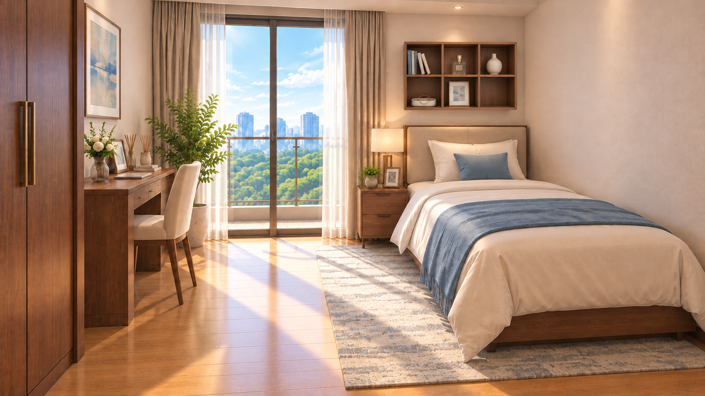
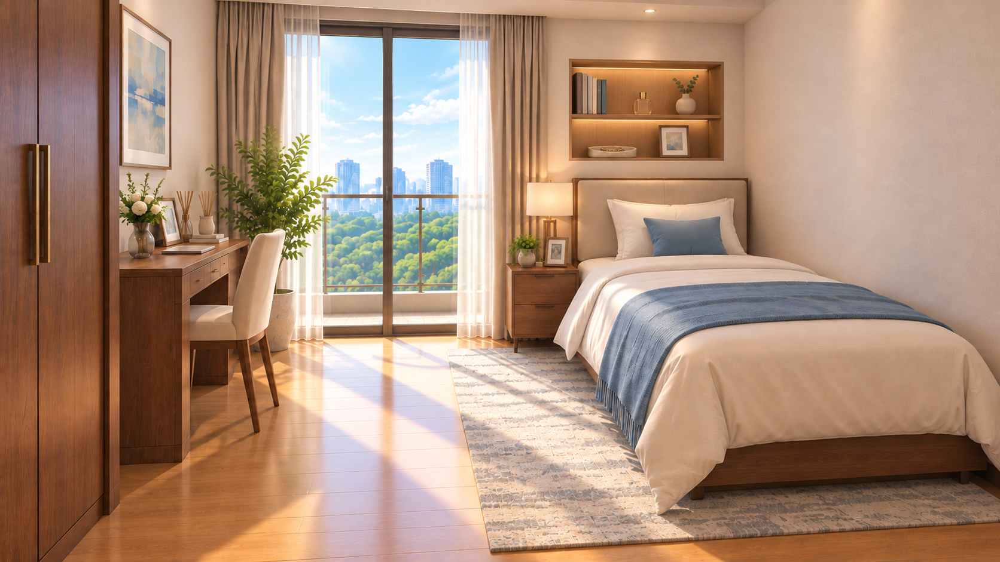
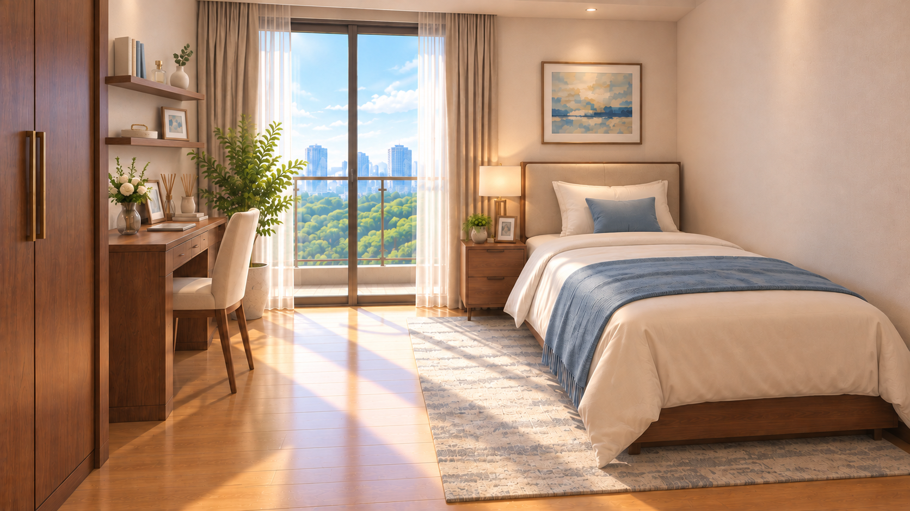

2026-10-23、内蔵image_genで各1案を生成。すべて昼の比較候補です。寝室の現行昼夜背景は変更していません。
本・香水瓶・花瓶・アクセサリートレー・小さな額は、見え方を比較するための仮置きです。内容・数は案によって少し異なります。
ベッド奥の絵を2段×3区画の木製棚へ変更。物を区画ごとに見分けやすい案。

ベッド奥の絵を、照明付きの埋め込み棚へ変更。室内になじむ案。

机上の絵を2段の棚へ変更。ベッド奥の絵を残す生活感のある案。

家具配置の大枠は目視確認。棚以外の画素完全一致、正確な寸法・建築整合性、ゲーム表示は未検証。